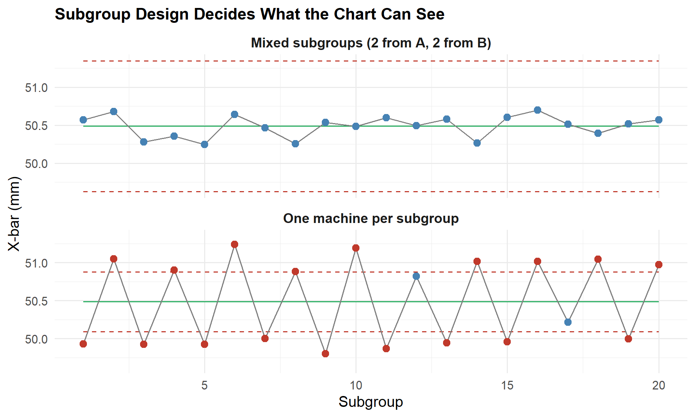
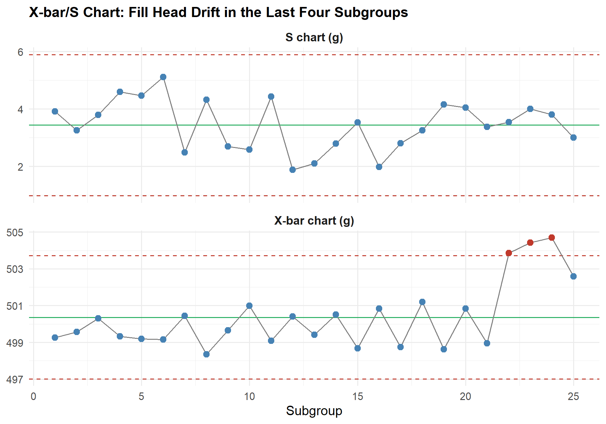
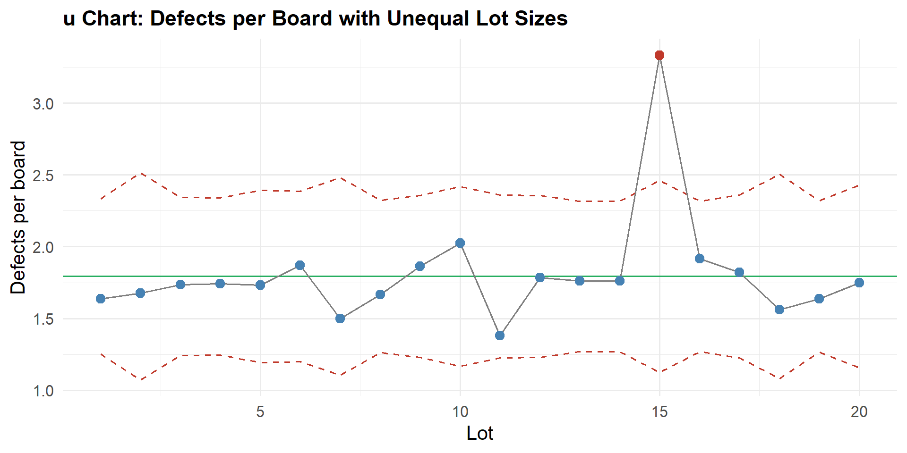
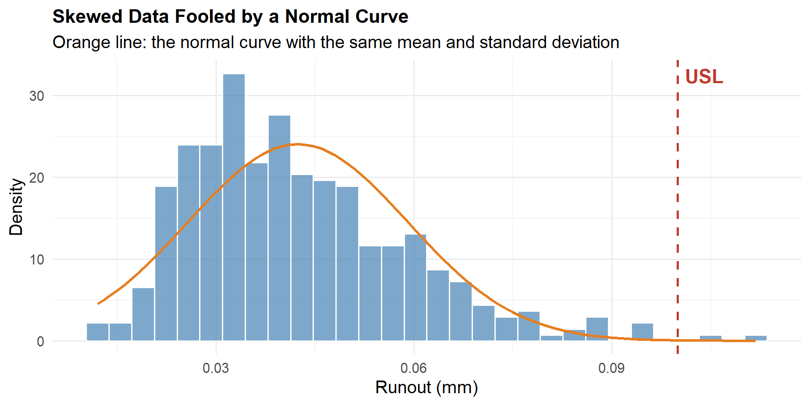
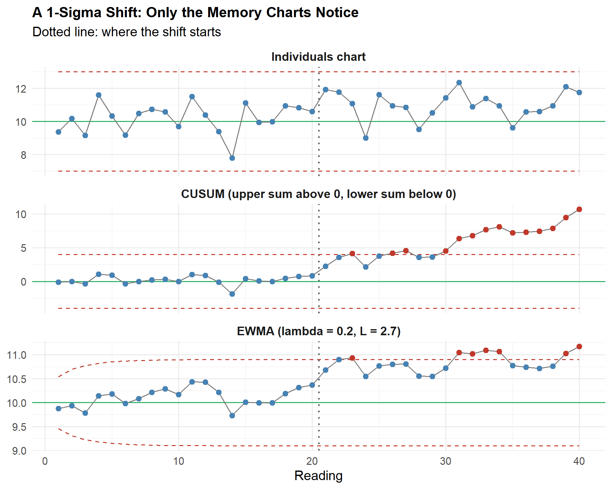

After completing this chapter, you will be able to:
Explain the difference between Phase I (setting up a chart) and Phase II (monitoring), and form rational subgroups
Construct and interpret X-bar/S charts, and say when S is the better choice than R
Construct and interpret np and u charts, including u charts with unequal sample sizes
Calculate and compare Cp/Cpk with Pp/Ppk and read the gap between them
Estimate capability for non-normal data with the percentile method, and judge how much a Cpk from a small sample can be trusted
Construct CUSUM and EWMA charts to detect small, sustained shifts, and compare charts by average run length
Choose a chart for short-run production and for autocorrelated data
18.2 Beyond the Basic Charts
The introductory SPC chapter gave you the working set: X-bar/R and I-MR for measurements, p and c for counts, the Western Electric rules, and Cp/Cpk. Those charts run most of the factory floor. They also carry assumptions that real processes break regularly:
Assumption behind the basic charts
When it fails
What this chapter adds
Subgroups contain only common-cause variation
Parts from two machines, cavities or shifts are mixed in one subgroup
Rational subgrouping
A range is a good enough spread estimate
Subgroups of 10 or more
X-bar/S chart
One defect rate and one sample size
Counts per lot, lots of different size
np and u charts
The process is stable, so Cpk describes it
Tool wear and drift make the long-term spread larger than the short-term
A 0.5 to 1.0 sigma drift is costly but never crosses a 3-sigma limit
CUSUM and EWMA
Many parts of one kind are made
Job shops make 50 parts of ten different kinds
Short-run charts
Industry connection: an automotive Tier 1 supplier submitting a PPAP needs to state Ppk for the initial run (stability not yet proven) and Cpk for ongoing production. A defence or aerospace supplier machining small lots of many part numbers uses short-run charts. A food plant filling bags uses X-bar/S on checkweigher data. A pharmaceutical or precision-casting line uses EWMA or CUSUM to catch slow drift before a limit is reached.
18.3 Setting Up Charts Properly
18.3.1 Phase I and Phase II
A control chart is used in two quite different ways:
Phase I: set up
Phase II: monitor
Question
Is the process stable, and what are its natural limits?
Has the process changed?
Data
20 to 25 subgroups collected for the purpose
New subgroups as they are produced
Limits
Trial limits computed from the same data they are plotted against
Fixed limits carried forward from Phase I
When a point is out
Find the assignable cause. If it is found and fixed, remove those points and recompute
Signal: investigate and act
Danger
Removing points only because they are out, without a cause, makes the process look better than it is
Recomputing limits every shift hides drift
Never recompute the limits in Phase II unless there is a documented, deliberate change to the process. A chart whose limits chase the data cannot signal a shift.
18.3.2 Rational Subgrouping
The control limits of an X-bar chart come from the variation within subgroups. The chart can therefore detect only differences between subgroups. A rational subgroup is chosen so that the variation within it is only the common-cause variation, and any special cause shows up between subgroups. Consecutive parts from one machine, one cavity and one setup are the usual choice.
The two charts below use the same two machines. The only difference is how the subgroups are formed.
# Two machines feed one line: A runs at 50.0 mm, B at 51.0 mm, same scatterset.seed(2024)n_sub <-20; n <-4; A2 <-0.729make_parts <-function(mean_mm, k) rnorm(k, mean_mm, 0.25)# (1) Mixed: each subgroup takes two parts from A and two from Bmixed <-t(replicate(n_sub, c(make_parts(50, 2), make_parts(51, 2))))# (2) Rational: each subgroup is four consecutive parts from ONE machine (A, B, A, B ...)by_machine <-t(sapply(1:n_sub, function(i) make_parts(ifelse(i %%2==1, 50, 51), n)))xbar_chart <-function(m, label) { xb <-rowMeans(m) r <-apply(m, 1, function(v) max(v) -min(v)) cl <-mean(xb)data.frame(design = label, subgroup =seq_len(nrow(m)), xbar = xb,cl = cl, ucl = cl + A2 *mean(r), lcl = cl - A2 *mean(r))}charts <-rbind(xbar_chart(mixed, "Mixed subgroups (2 from A, 2 from B)"),xbar_chart(by_machine, "One machine per subgroup"))charts$signal <- charts$xbar > charts$ucl | charts$xbar < charts$lclcat("=== Effect of subgroup design ===\n\n")for (d inunique(charts$design)) { s <- charts[charts$design == d, ]cat(sprintf("%-38s limits %.2f to %.2f mm (width %.2f), %d of %d points out\n", d, s$lcl[1], s$ucl[1], s$ucl[1] - s$lcl[1], sum(s$signal), nrow(s)))}ggplot(charts, aes(x = subgroup, y = xbar)) +geom_line(aes(y = ucl), color ="#C0392B", linetype ="dashed") +geom_line(aes(y = lcl), color ="#C0392B", linetype ="dashed") +geom_line(aes(y = cl), color ="#27AE60") +geom_line(color ="grey50") +geom_point(aes(color = signal), size =3) +scale_color_manual(values =c("FALSE"="steelblue", "TRUE"="#C0392B"), guide ="none") +facet_wrap(~design, ncol =1) +labs(title ="Subgroup Design Decides What the Chart Can See",x ="Subgroup", y ="X-bar (mm)") +theme_minimal() +theme(plot.title =element_text(face ="bold", size =12* chart_text_scale),strip.text =element_text(face ="bold", size =10* chart_text_scale))

The same two machines charted with mixed subgroups and with one machine per subgroup
=== Effect of subgroup design ===
Mixed subgroups (2 from A, 2 from B) limits 49.63 to 51.35 mm (width 1.72), 0 of 20 points out
One machine per subgroup limits 50.09 to 50.88 mm (width 0.79), 18 of 20 points out
With mixed subgroups the machine difference sits inside every subgroup. The range is inflated, the limits are wide, and the X-bar chart looks calm: the chart has hidden a one-millimetre difference between two machines. With one machine per subgroup the within-subgroup variation is the true short-term scatter, the limits are tight, and nearly every point now signals. The process has not changed. The chart has finally been asked a question it can answer.
Discussion: a 4-cavity mould fills four parts per shot. Is “the four parts of one shot” a rational subgroup?
Usually not for an X-bar chart. The four cavities differ systematically (flow length, cooling), so the range of a shot mostly measures cavity-to-cavity difference. The limits widen and cavity problems stay hidden.
Better options: chart each cavity separately (the subgroup is consecutive shots from one cavity), or chart the shot average on an I-MR chart and monitor the cavity differences on a separate chart. Which one you choose depends on whether cavity differences are something the process can control or a fixed feature of the tool.
18.4 Charts for Variables
18.4.1 X-bar/S Chart
The range is quick to calculate, but it uses only the two extreme readings. In a subgroup of 10 or more, the standard deviation \(s\) uses all of them and estimates the spread better. The rule of thumb is X-bar/R for \(n \le 9\), X-bar/S for \(n \ge 10\), and also whenever the calculation is done by software anyway.
Example: a filling line checks 10 bags every 30 minutes (target 500 g).
set.seed(77)n <-10; k <-25A3 <-0.975; B3 <-0.284; B4 <-1.716; c4 <-0.9727# constants for n = 10weights <-matrix(rnorm(n * k, mean =500, sd =3.5), nrow = k)weights[22:25, ] <- weights[22:25, ] +4# fill head drifts upward in the last four subgroupsxbar <-rowMeans(weights)s <-apply(weights, 1, sd)xbarbar <-mean(xbar); sbar <-mean(s)limits <-list(x_ucl = xbarbar + A3 * sbar, x_lcl = xbarbar - A3 * sbar,s_ucl = B4 * sbar, s_lcl = B3 * sbar)cat("=== X-bar/S chart, bag fill weight (g) ===\n\n")cat(sprintf("Grand mean %.2f g, average s %.2f g, estimated sigma %.2f g\n", xbarbar, sbar, sbar / c4))cat(sprintf("X-bar chart LCL %.2f CL %.2f UCL %.2f\n", limits$x_lcl, xbarbar, limits$x_ucl))cat(sprintf("S chart LCL %.2f CL %.2f UCL %.2f\n", limits$s_lcl, sbar, limits$s_ucl))cat("Subgroups beyond the X-bar limits:", which(xbar > limits$x_ucl | xbar < limits$x_lcl), "\n")charts <-rbind(data.frame(chart ="X-bar chart (g)", i =1:k, y = xbar, cl = xbarbar, ucl = limits$x_ucl, lcl = limits$x_lcl),data.frame(chart ="S chart (g)", i =1:k, y = s, cl = sbar, ucl = limits$s_ucl, lcl = limits$s_lcl))charts$out <- charts$y > charts$ucl | charts$y < charts$lclggplot(charts, aes(x = i, y = y)) +geom_hline(aes(yintercept = ucl), color ="#C0392B", linetype ="dashed") +geom_hline(aes(yintercept = lcl), color ="#C0392B", linetype ="dashed") +geom_hline(aes(yintercept = cl), color ="#27AE60") +geom_line(color ="grey50") +geom_point(aes(color = out), size =3) +scale_color_manual(values =c("FALSE"="steelblue", "TRUE"="#C0392B"), guide ="none") +facet_wrap(~chart, ncol =1, scales ="free_y") +labs(title ="X-bar/S Chart: Fill Head Drift in the Last Four Subgroups", x ="Subgroup", y =NULL) +theme_minimal() +theme(plot.title =element_text(face ="bold", size =12* chart_text_scale),strip.text =element_text(face ="bold", size =10* chart_text_scale))

X-bar/S chart of bag fill weight, 25 subgroups of 10
=== X-bar/S chart, bag fill weight (g) ===
Grand mean 500.36 g, average s 3.44 g, estimated sigma 3.53 g
X-bar chart LCL 497.01 CL 500.36 UCL 503.72
S chart LCL 0.98 CL 3.44 UCL 5.90
Subgroups beyond the X-bar limits: 22 23 24
Your turn : change the subgroup size and see how much the X-bar limits tighten. This is the price of a larger sample.
X-bar/S Chart Limits
Class task
g
g
Challenge: Get the X-bar chart limits no wider than 8.4 g (UCL minus LCL) without changing the average s. What subgroup size does it take, and what does each extra part cost you?
Show the live R code behind this calculator
The card above re-runs this exact webR code every time you change an input, substituting your values for the variables at the top. Edit the code directly and press Run Code to experiment further.
The limits narrow quickly at first (from \(n = 2\) to \(n = 5\) the width nearly halves) and slowly after \(n = 6\). That is why subgroups of 4 or 5 are the common choice, and a larger subgroup is only worth the extra measuring effort when the chart needs to catch a small shift.
18.5 Attribute Charts for Counts
The p chart and c chart in the introductory chapter cover the two most common cases. Two companions complete the set.
The np chart is the p chart in disguise, plotted as a count instead of a fraction: it is preferred on the shop floor because operators prefer to plot “7 bad pieces” than “0.047”. The u chart is the c chart for the case where the area of opportunity changes: boards per lot, metres of weld per shift, square metres of paint per day. Its limits widen and narrow with the sample size, just like the p chart’s.
set.seed(11)lots <-20boards <-sample(30:60, lots, replace =TRUE) # boards inspected per lotdefects <-rpois(lots, lambda =1.8* boards) # in-control rate: 1.8 defects per boarddefects[15] <-rpois(1, lambda =3.6* boards[15]) # lot 15: a bad solder-paste batchu <- defects / boardsu_bar <-sum(defects) /sum(boards)ucl <- u_bar +3*sqrt(u_bar / boards)lcl <-pmax(0, u_bar -3*sqrt(u_bar / boards))u_data <-data.frame(lot =1:lots, boards, u, ucl, lcl, out = u > ucl | u < lcl)cat(sprintf("u-bar = %.3f defects per board\n", u_bar))cat("Lots outside the limits:", u_data$lot[u_data$out], "\n")cat(sprintf("Limit width ranges from +/- %.2f (60 boards) to +/- %.2f (30 boards)\n",3*sqrt(u_bar /60), 3*sqrt(u_bar /30)))ggplot(u_data, aes(x = lot, y = u)) +geom_line(aes(y = ucl), color ="#C0392B", linetype ="dashed") +geom_line(aes(y = lcl), color ="#C0392B", linetype ="dashed") +geom_hline(yintercept = u_bar, color ="#27AE60") +geom_line(color ="grey50") +geom_point(aes(color = out), size =3) +scale_color_manual(values =c("FALSE"="steelblue", "TRUE"="#C0392B"), guide ="none") +labs(title ="u Chart: Defects per Board with Unequal Lot Sizes",x ="Lot", y ="Defects per board") +theme_minimal() +theme(plot.title =element_text(face ="bold", size =12* chart_text_scale))

u chart of solder defects per board, with lot sizes between 30 and 60 boards
u-bar = 1.793 defects per board
Lots outside the limits: 15
Limit width ranges from +/- 0.52 (60 boards) to +/- 0.73 (30 boards)
18.5.1 Try it yourself: an np chart
A stamping cell checks 150 brackets every shift for a burr. Over the last 25 shifts, the average fraction defective was \(\bar{p} = 0.04\).
Show the worked solution
Centre line: \(n\bar{p} = 150 \times 0.04 =\)6.0
Spread: \(\sqrt{6.0 \times (1 - 0.04)} =\) 2.400
UCL \(= 6.0 + 3 \times 2.400 =\)13.2
LCL \(= 6.0 - 3 \times 2.400 = -1.2\), which is negative, so LCL = 0
A shift with 14 or more defective brackets signals. With an average of 6 per shift, the chart can only detect a rise, never a fall, which is why the zero lower limit matters.
18.6 Process Capability in Depth
18.6.1 Within-Subgroup and Overall Spread: Cp/Cpk and Pp/Ppk
Every capability index divides a specification width by a spread. The four indices differ only in which spread they use:
Index
Spread used
Estimated from
Describes
Cp, Cpk
\(\hat{\sigma}_{within}\), the short-term spread
\(\bar{R}/d_2\) or \(\bar{s}/c_4\)
What the process could do if it were centred and stable
Pp, Ppk
\(\hat{\sigma}_{overall}\), the long-term spread
The standard deviation \(s\) of all the data
What the process actually delivered, drift and all
If the process is stable, the two spreads agree and the indices match. If the process drifts between subgroups (tool wear, temperature, material lots), the overall spread grows while the within-subgroup spread stays small. The gap between Cpk and Ppk is therefore a measure of how unstable the process is.
# 25 subgroups of 5 shaft diameters (mm); tool wear moves the process mean upwardset.seed(314)LSL <-24.85; USL <-25.15d2 <-2.326# n = 5drift <-seq(24.99, 25.05, length.out =25)shafts <-t(sapply(drift, function(m) rnorm(5, mean = m, sd =0.020)))x_all <-as.vector(shafts)r_bar <-mean(apply(shafts, 1, function(v) max(v) -min(v)))sigma_within <- r_bar / d2sigma_overall <-sd(x_all)mu <-mean(x_all)Cp <- (USL - LSL) / (6* sigma_within)Cpk <-min(USL - mu, mu - LSL) / (3* sigma_within)Pp <- (USL - LSL) / (6* sigma_overall)Ppk <-min(USL - mu, mu - LSL) / (3* sigma_overall)cat("=== Capability versus performance ===\n\n")cat(sprintf("Mean %.4f mm, sigma within %.4f mm, sigma overall %.4f mm\n\n", mu, sigma_within, sigma_overall))cat(sprintf("Cp = %.2f Pp = %.2f\n", Cp, Pp))cat(sprintf("Cpk = %.2f Ppk = %.2f\n\n", Cpk, Ppk))cat(sprintf("Ppk is %.0f%% below Cpk: %s\n", (1- Ppk / Cpk) *100,ifelse(Ppk / Cpk <0.85, "the process is drifting between subgroups", "the process is close to stable")))
=== Capability versus performance ===
Mean 25.0188 mm, sigma within 0.0195 mm, sigma overall 0.0279 mm
Cp = 2.56 Pp = 1.79
Cpk = 2.24 Ppk = 1.57
Ppk is 30% below Cpk: the process is drifting between subgroups
Question: When should I quote Cpk and when Ppk?
Cp/Cpk (process capability):
Uses within-subgroup variation (\(\sigma\) estimated from \(\bar{R}/d_2\))
Represents the potential capability if the process is in control
Use for ongoing monitoring, once the process is shown to be stable
Requires the process to be in statistical control
Pp/Ppk (process performance):
Uses the overall standard deviation \(s\) of all the data
Represents the actual performance, including all variation
Use for the initial run (a PPAP submission asks for it) or when stability is unknown
Includes both common-cause and special-cause variation
Rule of thumb:
If Pp is close to Cp and Ppk is close to Cpk, the process is stable
If Pp is much smaller than Cp, or Ppk much smaller than Cpk, the process has between-subgroup variation (drift, shifts, mixed sources)
Your turn : the process below has a short-term spread of 0.020 mm but an overall spread of 0.035 mm, and it runs slightly off-centre.
Cpk Versus Ppk
Class task
mm
mm
mm
mm
Challenge: Lift Ppk to 1.33 without moving the specification limits. Which is cheaper to change here: the process mean or the overall spread?
Show the live R code behind this calculator
The card above re-runs this exact webR code every time you change an input, substituting your values for the variables at the top. Edit the code directly and press Run Code to experiment further.
18.6.2 Capability When the Data Are Not Normal
All four indices turn a spread into a defect rate through the normal curve. Many measured characteristics are not normal. Runout, flatness, surface roughness, concentricity and the count of particles all have a hard lower limit at zero and a long tail on the high side. Using the normal formula on such data usually flatters the process, because the tail it ignores is exactly where the parts fail.
The percentile method replaces \(\pm 3\sigma\) around the mean with the actual 0.135% and 99.865% points of the data:
where \(\tilde{x}\) is the median. For a one-sided characteristic such as runout, only the upper term applies.
# Total indicated runout (mm), upper limit only: USL = 0.100 mmset.seed(808)USL <-0.100runout <-rlnorm(400, meanlog =log(0.040), sdlog =0.40)mu <-mean(runout); s <-sd(runout); med <-median(runout)Ppk_normal <- (USL - mu) / (3* s)p99865 <-quantile(runout, 0.99865, names =FALSE)Ppk_pct <- (USL - med) / (p99865 - med)cat("=== Runout capability (USL = 0.100 mm) ===\n\n")cat(sprintf("Mean %.4f, median %.4f, standard deviation %.4f mm\n", mu, med, s))cat(sprintf("Ppk assuming normal data: %.2f (predicts %.2f%% over the limit)\n", Ppk_normal, 100* (1-pnorm((USL - mu) / s))))cat(sprintf("Ppk by percentile method: %.2f\n", Ppk_pct))cat(sprintf("Parts actually over the limit: %.2f%%\n", 100*mean(runout > USL)))ggplot(data.frame(runout), aes(x = runout)) +geom_histogram(aes(y =after_stat(density)), bins =30, fill ="steelblue", alpha =0.7, color ="white") +stat_function(fun = dnorm, args =list(mean = mu, sd = s), color ="#E67E22", linewidth =1.2) +geom_vline(xintercept = USL, color ="#C0392B", linetype ="dashed", linewidth =1) +annotate("text", x = USL, y =Inf, label ="USL", hjust =-0.2, vjust =1.6,color ="#C0392B", fontface ="bold", size =4* diagram_text_scale) +labs(title ="Skewed Data Fooled by a Normal Curve",subtitle ="Orange line: the normal curve with the same mean and standard deviation",x ="Runout (mm)", y ="Density") +theme_minimal() +theme(plot.title =element_text(face ="bold", size =12* chart_text_scale))

Shaft runout is skewed: the normal formula and the percentile method disagree
=== Runout capability (USL = 0.100 mm) ===
Mean 0.0424, median 0.0397, standard deviation 0.0166 mm
Ppk assuming normal data: 1.16 (predicts 0.03% over the limit)
Ppk by percentile method: 0.88
Parts actually over the limit: 0.50%
The orange curve spills below zero and under-predicts the tail on the high side, so the normal-based Ppk looks acceptable while a visible share of parts exceed the limit. Software offers a transformation (Box-Cox, Johnson) or a fitted distribution (Weibull, lognormal) as alternatives; the percentile method is the one you can calculate by hand and explain to a customer.
18.6.3 How Much Can You Trust a Cpk?
A Cpk is an estimate from a sample, so it has an uncertainty of its own. An approximate 95% confidence interval is
95% confidence interval for an observed Cpk of 1.33
Sample size
Lower bound
Upper bound
30
0.97
1.69
50
1.05
1.61
100
1.13
1.53
200
1.19
1.47
500
1.24
1.42
An observed Cpk of 1.33 from 30 parts is consistent with a true Cpk anywhere from about 1.0 to 1.7. That is why customers specify the sample size of a capability study (typically 100 or more), and sometimes ask for a lower confidence bound of 1.33 rather than a point estimate of it.
18.7 Detecting Small Shifts: CUSUM and EWMA
A Shewhart chart judges each point on its own. A process that has moved by one half or one standard deviation produces points that are mostly inside the limits, and the Western Electric run rules take a long time to confirm it. Two charts solve this by remembering the past.
CUSUM (cumulative sum). Add up the deviations from target, ignoring any that are within a slack of \(k\):
The weight \(\lambda\) sets the memory: a small \(\lambda\) (0.05 to 0.2) averages over a long history and catches small shifts; \(\lambda = 1\) is a Shewhart chart. Typical settings are \(\lambda = 0.2\) and \(L = 2.7\) to \(3\).
set.seed(1)mu0 <-10; sigma <-1; n_obs <-40; shift_at <-21; shift <-1x <-rnorm(n_obs, mu0, sigma)x[shift_at:n_obs] <- x[shift_at:n_obs] + shift # a 1-sigma shift starts at reading 21# Individuals chart: +/- 3 sigmai_sig <-which(abs(x - mu0) >3* sigma)# CUSUM with k = 0.5 sigma and h = 4 sigmak <-0.5* sigma; h <-4* sigmac_up <- c_dn <-numeric(n_obs); up <- dn <-0for (i inseq_len(n_obs)) { up <-max(0, up + x[i] - (mu0 + k)) dn <-max(0, dn + (mu0 - k) - x[i]) c_up[i] <- up; c_dn[i] <- dn}c_sig <-which(c_up > h | c_dn > h)# EWMA with lambda = 0.2 and L = 2.7lambda <-0.2; L <-2.7z <-numeric(n_obs); prev <- mu0for (i inseq_len(n_obs)) { prev <- lambda * x[i] + (1- lambda) * prev; z[i] <- prev }ew_w <- L * sigma *sqrt(lambda / (2- lambda) * (1- (1- lambda)^(2*seq_len(n_obs))))e_sig <-which(abs(z - mu0) > ew_w)first <-function(s) if (length(s)) s[1] elseNAcat("=== First signal (the shift starts at reading 21) ===\n\n")cat("Individuals chart: ", ifelse(is.na(first(i_sig)), "no signal", paste("reading", first(i_sig))), "\n")cat("CUSUM: ", ifelse(is.na(first(c_sig)), "no signal", paste("reading", first(c_sig))), "\n")cat("EWMA: ", ifelse(is.na(first(e_sig)), "no signal", paste("reading", first(e_sig))), "\n")panels <-rbind(data.frame(chart ="Individuals chart", i =1:n_obs, y = x, lo = mu0 -3* sigma, hi = mu0 +3* sigma, cl = mu0),data.frame(chart ="CUSUM (upper sum above 0, lower sum below 0)", i =1:n_obs, y = c_up - c_dn, lo =-h, hi = h, cl =0),data.frame(chart ="EWMA (lambda = 0.2, L = 2.7)", i =1:n_obs, y = z, lo = mu0 - ew_w, hi = mu0 + ew_w, cl = mu0))panels$chart <-factor(panels$chart, levels =unique(panels$chart))panels$out <- panels$y > panels$hi | panels$y < panels$loggplot(panels, aes(x = i, y = y)) +geom_vline(xintercept = shift_at -0.5, color ="grey40", linetype ="dotted", linewidth =1) +geom_line(aes(y = hi), color ="#C0392B", linetype ="dashed") +geom_line(aes(y = lo), color ="#C0392B", linetype ="dashed") +geom_hline(aes(yintercept = cl), color ="#27AE60") +geom_line(color ="grey50") +geom_point(aes(color = out), size =2.5) +scale_color_manual(values =c("FALSE"="steelblue", "TRUE"="#C0392B"), guide ="none") +facet_wrap(~chart, ncol =1, scales ="free_y") +labs(title ="A 1-Sigma Shift: Only the Memory Charts Notice",subtitle ="Dotted line: where the shift starts",x ="Reading", y =NULL) +theme_minimal() +theme(plot.title =element_text(face ="bold", size =12* chart_text_scale),strip.text =element_text(face ="bold", size =10* chart_text_scale))

The same 40 readings on an individuals chart, a CUSUM and an EWMA; the mean shifts by 1 sigma after reading 20
=== First signal (the shift starts at reading 21) ===
Individuals chart: no signal
CUSUM: reading 23
EWMA: reading 23
The individuals chart sees nothing: every shifted reading is still well inside the 3-sigma limits. The CUSUM and EWMA both react within a few readings of the shift, because each new reading above target adds to the evidence instead of being judged alone.
18.7.1 Average Run Length
Charts are compared by their average run length (ARL): the average number of points plotted before the chart signals. We want a long ARL when the process is on target (few false alarms) and a short ARL after a shift. A 3-sigma Shewhart chart has an in-control ARL of about 370. For the same false-alarm rate, the memory charts are much faster at small shifts.
Shift size
Shewhart (3 sigma)
CUSUM (\(k\) = 0.5, \(h\) = 4)
EWMA (\(\lambda\) = 0.2, \(L\) = 2.7)
0.5 sigma
about 150
about 28
about 28
1.0 sigma
about 42
about 8
about 8
2.0 sigma
about 6
about 3
about 3
3.0 sigma
about 2
about 2
about 2
For large shifts all three charts perform about the same, and a Shewhart chart is simpler to run and to explain. The usual practice is to run an X-bar or I chart alongside a CUSUM or EWMA, so that large and small shifts are both covered.
Your turn : the simulation below estimates the ARL for a 0.5-sigma shift from 1000 simulated runs, for the three charts. It uses the same random numbers for every chart, so the differences are the charts and not luck.
Detection Speed: Shewhart, CUSUM and EWMA
Class task
sigma
sigma
Challenge: Make the EWMA find a 0.5-sigma shift in 30 readings or fewer on average, while keeping L at 2.6 or more so false alarms stay rare. Which direction does lambda have to move?
Show the live R code behind this calculator
The card above re-runs this exact webR code every time you change an input, substituting your values for the variables at the top. Edit the code directly and press Run Code to experiment further.
Keep one thing in mind: shrinking \(L\) makes every EWMA faster, but it also makes it signal on a process that has not moved. The comparison is only fair at a fixed false-alarm rate, which is what the goal above enforces by keeping \(L\) at 2.6 or more.
18.7.2 Try it yourself: a CUSUM by hand
A filling process targets 10.0 g with \(\sigma = 1\). Use \(k = 0.5\) (so the slack is 0.5) and the decision interval \(h = 4\). The table shows eight readings. Fill in the upper CUSUM \(C^+\) for each, then find the reading at which the chart first signals.
Show the worked solution
Upper CUSUM, target 10.0, k = 0.5
Reading
x
x - 10.5
C+
1
10.4
-0.1
0.0
2
9.8
-0.7
0.0
3
10.9
0.4
0.4
4
11.2
0.7
1.1
5
10.6
0.1
1.2
6
11.4
0.9
2.1
7
11.1
0.6
2.7
8
12.0
1.5
4.2
The sum stays at 0 while the readings sit near target, then grows by the excess over 10.5 on each high reading. It first exceeds h = 4 at reading 8 (C+ = 4.2). A Shewhart chart with 3-sigma limits at 13.0 would not have signalled yet: the highest reading is 12.0.
18.8 Special Situations
18.8.1 Short-Run Production
A job shop machines 50 pieces of one part number, then changes over to another. Each part number has its own mean and its own spread, so there are never enough points on one chart to set limits. The solution is to plot a standardised value that makes all part numbers comparable:
Deviation from nominal (a “DNOM” chart): plot \(x - \text{nominal}\). It works when all part numbers have a similar spread.
Z chart: plot \((x - \text{target}) / \sigma_{part}\), with limits at \(\pm 3\). It also removes differences in spread, but needs a believable \(\sigma\) for each part number.
Whichever is used, the chart is plotted continuously across changeovers, so a trend or shift shows up even though the part number has changed.
18.8.2 Autocorrelated Data
Control limits assume that successive readings are independent. A furnace temperature, a bath concentration or the level of a tank changes slowly, so each reading looks like the one before it. A Shewhart chart on such data signals far too often. Options:
Sample less often, until the readings are independent.
Chart the residuals of a time-series model rather than the readings.
Use an EWMA of the data with limits adjusted for the autocorrelation, or a “moving centre line” chart.
Check by plotting \(x_i\) against \(x_{i-1}\): a visible slope means the independence assumption is broken.
18.8.3 Over-Adjustment
Deming’s funnel experiment from the introductory chapter has a second lesson here: if a CUSUM or EWMA chart is allowed to trigger an adjustment every time it moves, the adjustments themselves add variation. A memory chart should signal an investigation first. Automatic compensation belongs to the process controller, not the operator chart.
18.9 Choosing the Chart
Question
Chart
Subgroups of 10 or more measurements
X-bar/S
Constant sample size, counting defective units
np
Varying number of units, counting defects per unit
u
Small drift matters (under about 1.5 sigma)
CUSUM or EWMA
Many part numbers, short runs
Z or DNOM chart
Initial run, stability unknown
Report Pp/Ppk and a chart together
18.9.1 Try it yourself: which chart fits?
18.10 Summary
Phase I sets the limits, Phase II uses them. Do not recompute limits to follow the data, and do not delete a point without an assignable cause.
Subgrouping is a design decision. Mixed sources inside a subgroup hide the very differences the chart should find.
Use S for large subgroups, np and u for counts. The u chart handles unequal sample sizes; its limits move with the sample.
Cpk is potential, Ppk is performance. A large gap between them says the process is not stable.
Normal formulas flatter skewed data. Check the shape, use the percentile method, and state the sample size behind any capability figure.
CUSUM and EWMA catch small shifts. Keep a Shewhart chart for large ones and compare charts by ARL.
Short-run and autocorrelated processes need adapted charts, not forced onto the standard ones.
“A control chart that nobody understands will eventually be ignored, and one that is over-tuned will be distrusted. Use the simplest chart that sees the problem you have.”
18.11 Review Questions
Question 1: A process has Cpk = 1.60 and Ppk = 0.95. What does the gap tell you, and what would you check first?
Answer:
The short-term spread is small (Cpk is excellent) but the long-term performance is poor. The difference between \(\sigma_{within}\) and \(\sigma_{overall}\) is between-subgroup variation: something is changing the process from subgroup to subgroup.
Check first:
Plot the X-bar chart: is there a trend (tool wear) or a step (new material lot, new shift)?
Look at the data by machine, cavity, shift and material lot: a mixture of sources produces the same pattern.
Look at the subgrouping: if the subgroup is too short, slow drift is hidden inside it.
Fix the cause of the shift before spending money on a tighter machine: the machine is already capable, but the process is not stable.
Question 2: Why does a chart on subgroups that each contain one part from each of two machines look “better” than a chart with one machine per subgroup, and which one should you trust?
Answer:
With mixed subgroups the machine difference sits inside every subgroup. The within-subgroup range is inflated, so the limits are wide enough to hide the difference, and the X-bar chart looks calm. With one machine per subgroup the range reflects only the short-term scatter, the limits are tight, and the machine difference appears as a pattern between subgroups.
Trust the second chart. The first one looks better only because it is unable to ask the right question.
Question 3: Give two situations where you would add an EWMA or CUSUM to an X-bar chart, and one where the X-bar chart alone is enough.
Answer:
Add a memory chart: tool wear that moves the dimension by a fraction of a sigma per day; a slow drift in a bath concentration or a furnace; any process where a half-sigma shift costs real money (rework, scrap, warranty).
X-bar alone is enough: a process where the failure modes are abrupt (a broken tool, a wrong setup, a missing component) and large. A Shewhart chart catches a shift of 2 sigma or more within a few subgroups and is easier to run and explain to operators.
Question 4: A capability study of 30 parts gives Cpk = 1.45. The customer requires 1.33. Is the requirement met?
Answer:
The point estimate is above 1.33, but with only 30 parts the 95% confidence interval for Cpk is roughly 1.45 \(\pm\) 0.40, so the true value could be near 1.05. Unless the customer specifies a point estimate, the evidence is not conclusive. Collect a larger sample (100 or more parts) and check that the process was stable while the sample was taken, then report the lower confidence bound.
18.12 References
Montgomery, D.C. (2019). Introduction to Statistical Quality Control (8th ed.). Wiley.
Wheeler, D.J. (2000). Understanding Variation: The Key to Managing Chaos (2nd ed.). SPC Press.
Wheeler, D.J., & Chambers, D.S. (1992). Understanding Statistical Process Control (2nd ed.). SPC Press.
AIAG. (2005). Statistical Process Control (SPC) Reference Manual (2nd ed.). Automotive Industry Action Group.
Lucas, J.M., & Saccucci, M.S. (1990). Exponentially weighted moving average control schemes: properties and enhancements. Technometrics, 32(1), 1-12.
ISO 22514-2:2017. Statistical methods in process management - Capability and performance - Part 2: Process capability and performance of time-dependent process models.